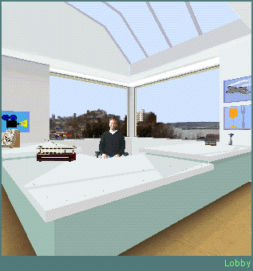

The Seattle Desk provides information on the city of Seattle, places to live, transportation, restaurants, and fun things to do. You will also find helpful links to pages on the World Wide Web.

The Seattle Desk receptionist, named Morris, is also available to provide further details on Seattle resources. Click Morris  to view a list of Frequently Asked Questions about the Seattle area.
to view a list of Frequently Asked Questions about the Seattle area.
Tip You can type "Morris" in the chat text box at any time and he will provide the same information.

Click the newspaper to view the latest news and topics of conversation related to the Seattle area.

Click the house on the desk to be directed to resources on finding a place to stay in the Seattle area, links to local Web sites that detail apartment prices and locations, and contact information.

Click the trolley car to view transportation options available in the Seattle area. This page includes links to local Metro bus information, vehicle rental companies, and current traffic conditions.

Click the Space Needle on the desk to find information on Seattle landmarks and historical monuments. This page also provides links to sightseeing tours, including such items as the Seattle Underground Tour.